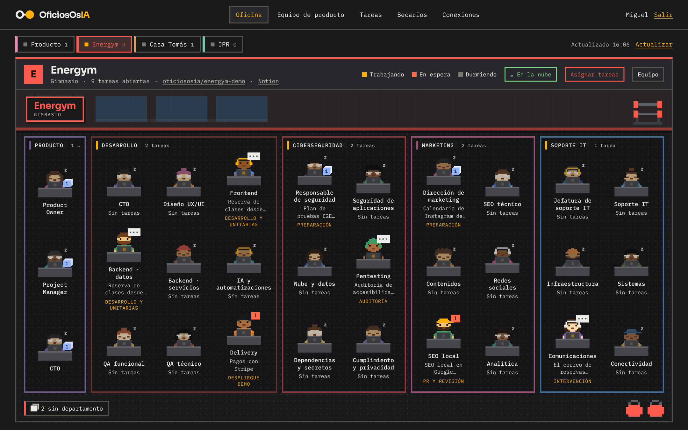
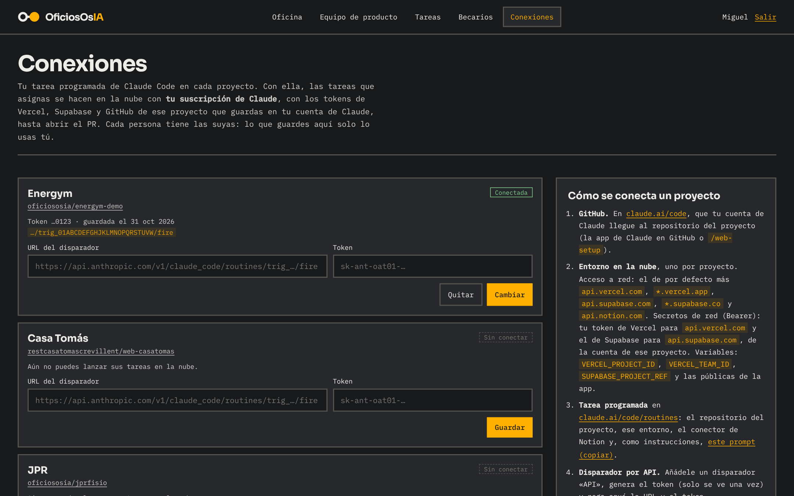
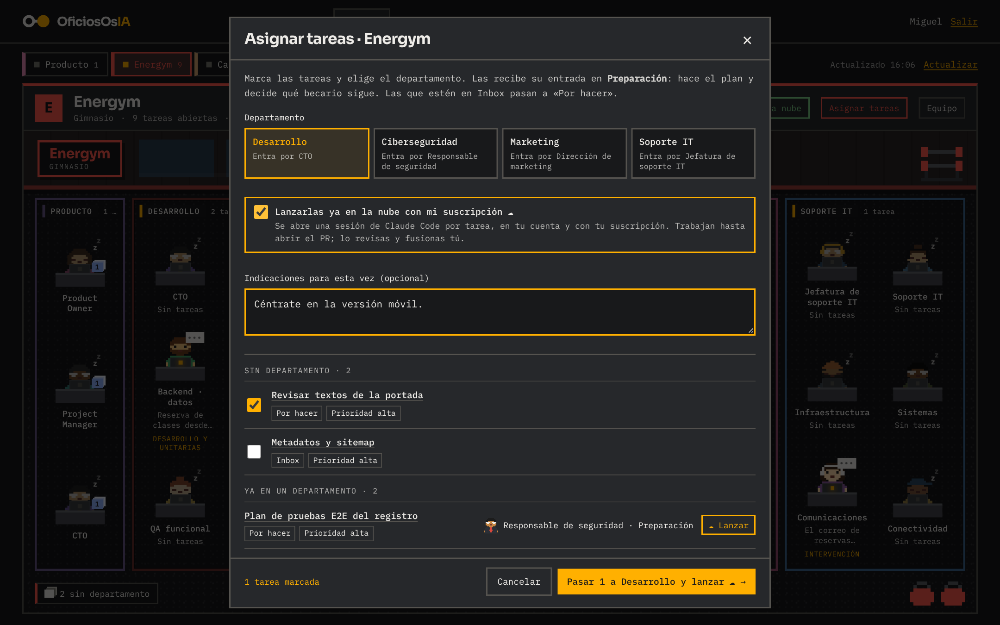
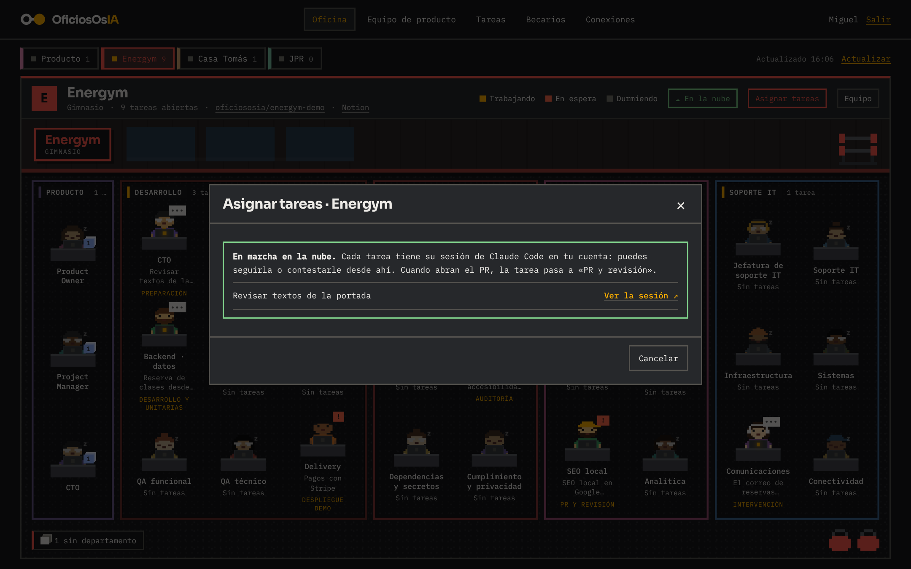
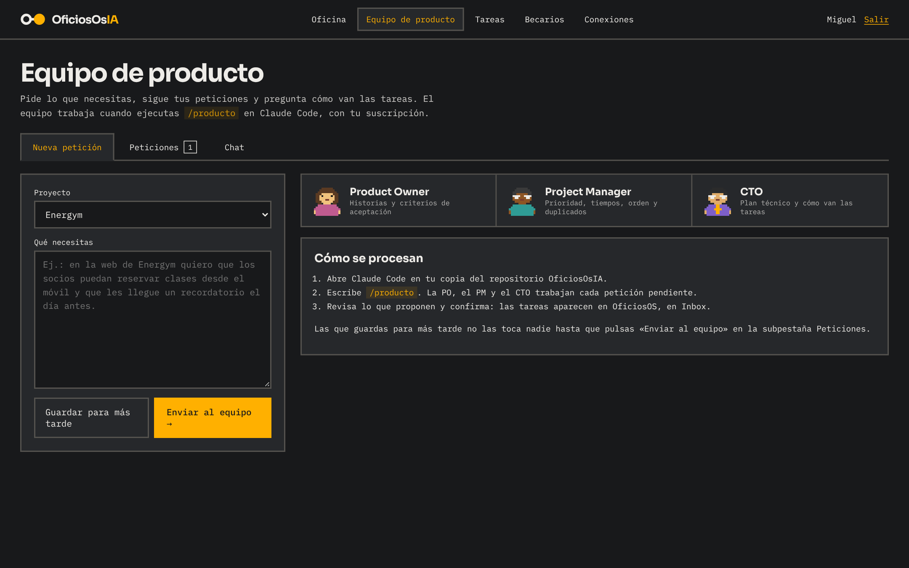
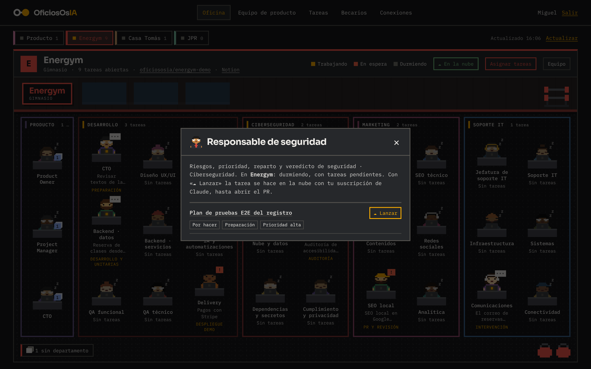
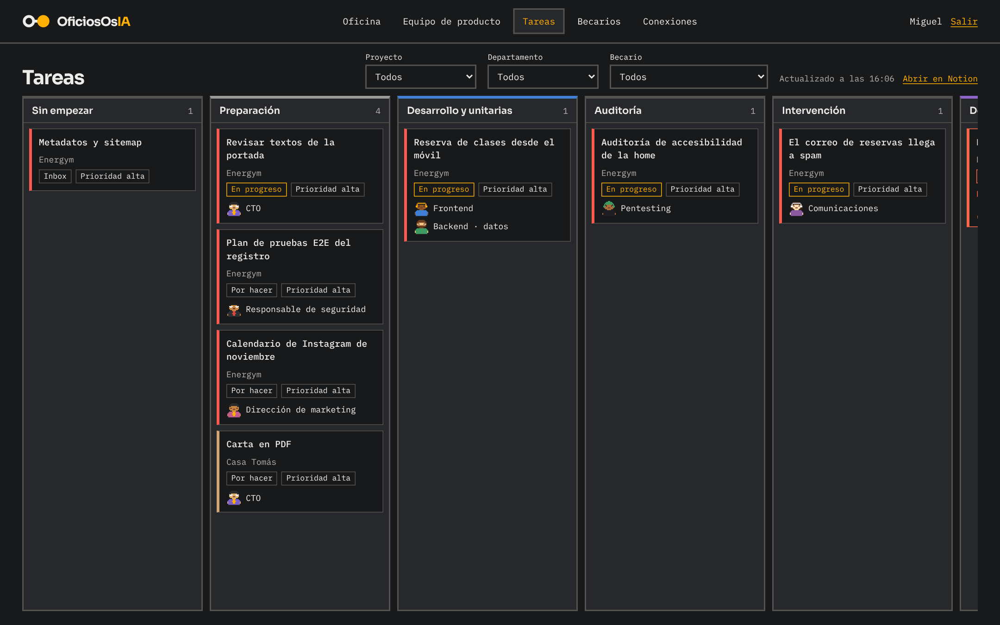

Guía paso a paso para empezar desde cero: entrar en el panel, conectar tu suscripción de Claude y lanzar tareas que acaban en un PR.
Para quién: Miguel (sirve igual para cualquiera que se una).
Qué tendrás al terminar:
Tiempo: unos 30 minutos la primera vez y 10 minutos más por cada proyecto.
Cómo leer esta guía. Ve en orden y no te saltes pasos. Cada paso empieza por un número amarillo. Las cajas de colores significan:
OficiosOsIA tiene una oficina virtual. Cada proyecto (Energym, Casa Tomás, JPR…) es una sala con varias habitaciones, una por departamento. En cada habitación hay becarios: agentes de inteligencia artificial que hacen trabajo de verdad sobre el código del proyecto.
| Departamento | Qué hace | Quién recibe las tareas |
|---|---|---|
| Producto | Convierte lo que pides en texto normal en tareas bien escritas en Notion. | PO, PM y CTO de producto |
| Arranque | Monta un proyecto nuevo desde cero: arquitectura, base de código, entornos, diseño base y calidad. | Jefatura de arranque |
| Desarrollo | Diseña, programa, prueba y prepara despliegues. | CTO |
| Ciberseguridad | Audita, prueba y protege: código, nube, datos y RGPD. | Responsable de seguridad |
| Marketing | SEO, contenidos, redes sociales, SEO local y analítica. | Dirección de marketing |
| Soporte IT | Infraestructura, sistemas, correo, redes e incidencias. | Jefatura de soporte IT |
Todo va con tu suscripción de Claude. No se paga por uso de API. Cada lanzamiento gasta de tu plan (Pro, Max…) igual que si usaras Claude Code tú mismo. Lo que lanzas tú gasta tu suscripción; lo que lanza Pablo, la suya.
Los becarios nunca fusionan PRs ni despliegan a producción. Siempre lo decides tú. Tampoco tocan DNS, dominios ni cuentas de los clientes: si hace falta, te dejan los pasos escritos.
Esto lo prepara Pablo una sola vez. Pídeselo y no sigas hasta tenerlo todo.
| Qué necesitas | Cómo saber que lo tienes | |
|---|---|---|
| Usuario y contraseña del panel (usuario Miguel). | Puedes entrar en el panel (capítulo 3). | |
| Suscripción de Claude Pro, Max, Team o Enterprise, a tu nombre. | En claude.ai → Ajustes → Plan ves tu plan. El plan gratuito no sirve. | |
| Cuenta de GitHub con acceso a la organización oficiososia y a los repositorios de los clientes. | Abres github.com/oficiososia y ves los repos (por ejemplo, energym-demo). | |
| Acceso al Notion de OficiosOsIA. | Ves la base de tareas «Oficios OS» y la página «Panel OficiosOsIA». | |
| Acceso al Vercel de cada proyecto (invitación al equipo). | Entras en vercel.com y ves el proyecto. | |
| Acceso al Supabase de cada proyecto que lo use. | Entras en supabase.com/dashboard y ves el proyecto. |
Si un proyecto es de un cliente con sus propias cuentas (su GitHub, su Vercel, su Supabase), el cliente o Pablo te tienen que invitar en cada una. Sin acceso no podrás sacar los tokens del capítulo 5.
5 minutos.

| Pestaña | Para qué sirve |
|---|---|
| Oficina | Ver qué hace cada becario, asignar tareas y elegir el equipo de cada proyecto. |
| Equipo de producto | Pedir cosas nuevas en texto normal, ver tus peticiones y preguntar cómo van las tareas. |
| Tareas | El tablero (kanban) con todas las tareas por fase. Se filtra por proyecto, departamento y becario. |
| Becarios | La ficha de cada becario: nombre, aspecto, instrucciones, modelo de IA y si está en pausa. |
| Conexiones | Tus conexiones con Claude, una por proyecto. Es lo que vas a configurar en el capítulo 5. |
Si ves la oficina con sus habitaciones y tu nombre arriba a la derecha, este capítulo está hecho.
10 minutos. Se hace una sola vez.
En claude.ai/code, al empezar una sesión nueva, puedes elegir el repositorio del proyecto en la lista.
Sin Notion conectado, los becarios no pueden leer la tarea ni dejarla al día, y la sesión se para con el mensaje «Conecta Notion a la tarea programada».
10 minutos por proyecto. Repite este capítulo entero para cada proyecto (Energym, Casa Tomás…). En los ejemplos uso Energym.
Vas a crear tres cosas en Claude: un entorno (dónde trabaja y con qué tokens), una tarea programada (qué hace) y un disparador (el botón que pulsa el panel). Después pegas el disparador en el panel.
api.vercel.com *.vercel.app api.supabase.com *.supabase.co api.notion.com
VERCEL_PROJECT_ID=prj_xxxxxxxxxxxx VERCEL_TEAM_ID=team_xxxxxxxxxxxx SUPABASE_PROJECT_REF=xxxxxxxxxxxxxxxxxxxxAñade también las variables públicas que necesite la web para compilar (las que empiezan por VITE_ o NEXT_PUBLIC_; vienen en el README del proyecto o en Vercel → Settings → Environment Variables).
Nunca pongas tokens en «Environment variables». Los tokens van en el paso siguiente, como secretos de red: así Claude los usa sin poder verlos.
| Campo | Secreto de Vercel | Secreto de Supabase |
|---|---|---|
| Name | Vercel | Supabase |
| Allowed websites | api.vercel.com | api.supabase.com |
| Header · Name | Authorization (ya viene puesto) | Authorization |
| Header · Prefix | Bearer (ya viene puesto) | Bearer |
| Header · Value | tu token de Vercel | tu token de Supabase |
En Network secrets ves «Vercel» y «Supabase» con su dominio al lado. Ya no se puede ver el valor: es lo normal.
https://api.anthropic.com/v1/claude_code/routines/trig_XXXXXXXXXXXX/fire
Si se te pasó copiar el token, no pasa nada: en Edit → disparador API pulsa Regenerate y te sale uno nuevo (el anterior deja de valer).
No pulses Run now en esta tarea: sin encargo del panel no hace nada y te contesta «Esta tarea solo funciona cuando se lanza desde el panel».

La tarjeta pone Conectada y en la oficina de ese proyecto aparece «☁ En la nube» arriba. El token se guarda cifrado: ni Pablo ni Notion lo pueden ver.
5 minutos, más lo que tarde Claude en hacer la tarea.


Funciona si:
Una tarea normal tarda entre 10 y 40 minutos. Puedes cerrar el navegador: la sesión sigue en la nube.



Límites de Claude: 30 lanzamientos por hora en cada tarea programada y 100 por hora en tu cuenta. Si llegas, el panel te dice cuántos minutos esperar.
Cuando entra un cliente nuevo, el equipo de Arranque monta la base del proyecto: arquitectura, estructura del código, entornos, CI, sistema de diseño, esquema de datos con permisos, pruebas y documentación. Termina con un PR y con el backlog del MVP como tareas en Notion, listas para Desarrollo.
Si el repositorio ya tiene código de verdad, Arranque se para y te dice que lo lleve Desarrollo: no rehace proyectos que ya existen, salvo que la tarea lo pida expresamente.
No hace falta para lanzar en la nube. Sirve para usar al equipo de producto (/producto:producto) y para trabajar con los becarios en tu ordenador.
Lo más fácil: descarga la app de escritorio de Claude desde claude.com/download, que ya trae Claude Code. Si prefieres la terminal:
Mac o Linux (app Terminal):
curl -fsSL https://claude.ai/install.sh | bash
Windows (PowerShell):
irm https://claude.ai/install.ps1 | iex
Dentro de Claude Code, escribe estas líneas una a una, pulsando Intro después de cada una:
/plugin marketplace add oficiososia/becarios /plugin install producto@oficiososia /plugin install arranque@oficiososia /plugin install desarrollo@oficiososia /plugin install seguridad@oficiososia /plugin install marketing@oficiososia /plugin install soporte@oficiososia /plugin install oficina@oficiososia
Cierra Claude Code (Ctrl+C dos veces) y vuelve a abrirlo con claude.
Escribe / y deben salir, entre otros, /producto:producto, /desarrollo:becarios, /seguridad:seguridad, /marketing:marketing y /soporte:soporte.
Si ya conectaste Notion en claude.ai (capítulo 4.2), Claude Code lo usa solo. Compruébalo escribiendo /mcp: debe salir Notion como conectado. Si no sale, conéctalo desde ahí.
| Comando | Qué hace |
|---|---|
| /producto:producto | Contesta el chat del panel y convierte las peticiones pendientes en tareas de Notion. Te pide confirmación antes de crearlas. |
| /producto:producto chat | Solo contesta el chat. |
| /arranque:arranque <URL> | Monta la base de un proyecto nuevo (repositorio casi vacío). |
| /desarrollo:becarios <URL de la tarea> | El equipo de desarrollo trabaja una tarea en tu ordenador, en la carpeta del proyecto. |
| /seguridad:seguridad <URL> | Auditoría de seguridad de una tarea. |
| /marketing:marketing <URL> | Trabajo de marketing de una tarea. |
| /soporte:soporte <URL> | Diagnóstico de una incidencia. |
Para los comandos de un proyecto, abre Claude Code dentro de la carpeta de ese proyecto (git clone del repo y cd a la carpeta). La URL de la tarea es la de su página en Notion (Compartir → Copiar enlace).
Busca el mensaje que ves y haz lo que dice la columna de la derecha.
| Mensaje o síntoma | Qué hacer |
|---|---|
| «No tienes conexión con Claude para …» | Te falta la conexión de ese proyecto: capítulo 5.6. |
| «El token no vale para esa tarea programada» | En claude.ai/code/routines → la tarea → Edit → disparador API → Regenerate. Pega el token nuevo en Conexiones. |
| «Esa tarea programada ya no existe en tu cuenta» | La URL es de una tarea borrada. Repite 5.5 y 5.6. |
| «¿Está en pausa la tarea programada?» | En claude.ai/code/routines, reactiva la tarea. |
| «Has llegado al límite de lanzamientos por hora» | Espera los minutos que indica. Son 30 por hora en cada tarea y 100 por cuenta. |
| «… no tiene a … en …: añádelo con Equipo» | Ese departamento no tiene a su entrada en el equipo del proyecto: botón Equipo de la oficina. |
| «… está en pausa» | Pestaña Becarios → Configurar → quita la pausa. |
| «… no tiene Repositorio en la base Proyectos» | Pide a Pablo que rellene «Repositorio» de ese proyecto en Notion. |
| «Falta CONEXIONES_SECRETO en Vercel» | Avisa a Pablo: falta una variable en el Vercel del panel. |
| La sesión dice «Conecta Notion a la tarea programada» | Capítulo 4.2, y en la tarea programada → Edit → Connectors → añade Notion. |
| La sesión dice que el repositorio no coincide o no puede clonarlo | La tarea programada tiene otro repositorio, o tu GitHub no tiene acceso: revisa 4.1 y 5.5 (paso 5). |
| Errores 403 al llamar a Vercel o Supabase (host_not_allowed) | Falta el dominio en Network access: capítulo 5.3, paso 3. |
| La sesión no puede leer Vercel o Supabase (401) | El secreto de red tiene mal el token o el dominio: capítulo 5.4. Si el token caducó, crea otro. |
| La sesión dice que la preview de Vercel pide acceso | El proyecto tiene la protección de despliegues activada. Los becarios prueban entonces contra la web compilada en local; para probar la preview, quita la protección en Vercel o da acceso. |
| Se ha abierto un PR en borrador con «Bloqueo» en la tarea | Los becarios se atascaron: lee el motivo en «Bloqueo» y en la sesión, arréglalo y vuelve a lanzar. |
| No salen las habitaciones de un departamento | Ese departamento no está en el equipo del proyecto: botón Equipo. |
Si nada de esto lo arregla, manda a Pablo: el enlace de la sesión de Claude, el enlace de la tarea en Notion y una captura del mensaje.
35 becarios en 5 departamentos, más el equipo de producto. La entrada de cada departamento (en negrita) recibe las tareas, hace el plan y reparte.
| Departamento | Fases en Notion |
|---|---|
| Arranque | Preparación → Cimientos → PR y revisión |
| Desarrollo | Preparación → Desarrollo y unitarias → Despliegue DEMO → QA DEMO → PR y revisión (→ Despliegue PROD → QA PROD, siempre a mano) |
| Ciberseguridad | Preparación → Auditoría → PR y revisión |
| Marketing | Preparación → Producción → PR y revisión |
| Soporte IT | Preparación → Intervención → PR y revisión |
Imprime esta página (o cópiala) y márcala para cada proyecto.
Proyecto: ______________________________ Repositorio: ______________________________
| Paso | Dónde | |
|---|---|---|
| La app de Claude está instalada en el repositorio del proyecto | github.com/apps/claude | |
| Token de Vercel creado | Vercel → Account Settings → Tokens | |
| Project ID y Team ID copiados | Vercel → Settings → General | |
| Token de Supabase creado (si lo usa) | supabase.com/dashboard/account/tokens | |
| Project ref de Supabase copiado (si lo usa) | Supabase → Project Settings → General | |
| Entorno creado con los dominios permitidos | claude.ai/code → selector de entorno | |
| Variables puestas (IDs y variables públicas, sin tokens) | Entorno → Environment variables | |
| Secretos de red de Vercel y Supabase añadidos | Entorno → Network secrets | |
| Tarea programada creada (prompt, repo, entorno, Notion) | claude.ai/code/routines | |
| Disparador API con token copiado | Tarea → Edit → Trigger → API | |
| Conexión guardada y «Conectada» | Panel → Conexiones | |
| Equipo del proyecto con los departamentos que toquen | Panel → Oficina → Equipo | |
| Primera prueba con PR abierto | Panel → Asignar tareas → lanzar | |
| Notas temporales con tokens borradas | — |
| Palabra | Qué significa |
|---|---|
| Becario | Un agente de IA con un papel concreto (frontend, SEO, pentesting…). |
| Entrada | El becario que recibe las tareas de su departamento y reparte el trabajo. |
| Repositorio (repo) | La carpeta del código de un proyecto en GitHub. |
| Rama | Una copia del código donde se hacen cambios sin tocar la versión principal. Las de los becarios empiezan por claude/. |
| PR (pull request) | La propuesta de cambios de una rama. Tú la revisas y, si está bien, la fusionas (merge) en la versión principal. |
| Preview / DEMO | Una copia de la web con los cambios del PR que Vercel publica sola para probarla antes de fusionar. |
| Producción (PROD) | La web de verdad que ven los clientes. |
| Tarea programada (routine) | Una configuración guardada en tu cuenta de Claude (instrucciones, repositorio, entorno y conectores) que se pone en marcha cuando el panel la llama. |
| Disparador (trigger) API | La dirección (Fire URL) y la llave (token) con las que el panel pone en marcha tu tarea programada. |
| Entorno en la nube | El «ordenador» de Claude en la nube para un proyecto: qué webs puede visitar, qué variables tiene y qué secretos usa. |
| Secreto de red | Un token que Claude usa para llamar a una web (Vercel, Supabase) sin poder verlo. |
| Token | Una contraseña larga para que un programa entre en una cuenta. Trátalo como una contraseña. |
| Conector | Una conexión de tu cuenta de Claude con otra app (Notion, por ejemplo). |
| Fase / Estado | En Notion: la fase dice en qué punto del flujo está la tarea (Preparación, Auditoría…); el estado, si está por hacer, en progreso, en espera o hecha. |
| Subtarea | Una tarea hija que crean los becarios (por ejemplo, un fallo encontrado). No sale en el panel; se ve dentro de la tarea padre en Notion. |
¡Listo! Si has llegado hasta aquí con la lista del Anexo B marcada, ya eres operativo. Bienvenido a la oficina.